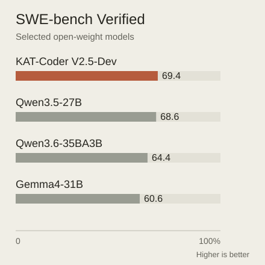

Long coding tasks demand more than generating a plausible function. The model must use tools correctly, retain context and avoid repetitive behavior across many actions, while remaining practical to deploy.
长程编程任务不仅需要生成合理的函数，还要求模型正确调用工具、保持上下文并避免重复行为，同时兼顾部署成本。
This release brings that deployment question into focus: an open-weight coding model needs useful task performance as well as reliable behavior at the tool interface.
这一版本关注实际部署：开放权重编程模型既需要有效的任务表现，也需要在工具接口上保持可靠行为。
An open-weight model for extended coding tasks面向长程编程的开放权重模型
The release provides language-model weights with 35 billion total and 3 billion active parameters. Supervised fine-tuning and reinforcement learning target agentic coding and behavioral reliability. The model card reports reductions in malformed tool tags and repeated single-turn output.
该版本开放语言模型权重，总参数 35B、激活参数 3B。监督微调和强化学习针对智能体编程与行为可靠性进行优化，模型卡报告了异常工具标签和单轮重复输出的减少。
Sparse activation separates the number of stored parameters from the computation used for each token. The release’s 35B total and 3B active parameters describe that architecture, not a guarantee of identical cost across serving systems. The open-weight artifact also has a narrower scope than its underlying multimodal family: the model card releases the language-model weights for text-only use. That boundary matters when reproducing a coding workflow or selecting a compatible deployment stack.
稀疏激活把存储参数规模与每个 token 的计算量分开。35B 总参数、3B 激活参数描述架构，并不保证不同服务系统成本相同。该开放版本还限定为用于纯文本的语言模型权重，不能直接等同于其基础模型家族的多模态能力；复现编程工作流和选择部署栈时需要明确这一边界。
{kind=link}

Reading the release evaluations理解版本评测
The model card downloads public peer weights and evaluates them through a common in-house pipeline, rather than copying each model’s published headline score. The comparison spans repository coding, multilingual tasks, tool use and scientific coding. Most tests run once unless an obvious error is detected. This makes the harness, context budget and serving configuration part of the result, and limits how confidently small score differences can be ranked.
模型卡下载公开对比模型权重，在统一内部流程中评测，而不是汇总各家公布的最高分。比较覆盖仓库编程、多语言、工具使用和科学编程。多数测试只运行一次，除非发现明显错误，因此框架、上下文预算和服务配置都属于结果的一部分，小分差的排名也需要谨慎理解。
Where the model is competitive模型在哪些方面具有竞争力
In the KAT team’s in-house evaluation, the model scores 69.4 on SWE-bench Verified, 63.0 on Multilingual and 45.96 on Pro. The SWE tests use Claude Code 2.1.195, pass@1 and a 256k context. These are single-run reproductions under the stated harness; peer scores can differ from their official reports.
在 KAT 团队内部复测中，SWE-bench Verified、Multilingual、Pro 分别为 69.4、63.0、45.96。SWE 评测使用 Claude Code 2.1.195、pass@1 和 256k 上下文。这些是特定框架下的单次复测结果，可能与对比模型的官方分数不同。
Deployment is more than parameter count部署不只取决于参数量
Open weights make the model useful as an inspectable deployment and research artifact. The release provides a starting point for studying long-horizon behavior under a chosen harness, but the card’s ranking is not independent evidence of universal superiority. Reproducing the evaluation protocol and checking behavior on the intended workload are the natural next steps before selecting a model.
开放权重使模型成为可检查、可部署的研究产物，也为特定框架下的长程行为研究提供起点。但模型卡排名并不是普遍领先的独立证据。在选择模型前，复现评测协议并检查目标工作负载上的行为，仍是必要的验证。
Data & evaluation setup / 数据与评测条件
| Model | Score |
|---|---|
| KAT-Coder V2.5-Dev | 69.4 |
| Qwen3.5-27B | 68.6 |
| Qwen3.6-35BA3B | 64.4 |
| Gemma4-31B | 60.6 |
Four selected models from the model card. All scores were re-evaluated by the KAT team using Claude Code 2.1.195, pass@1 and a 256k context. Harness differences affect results; these are not the peers’ official scores.选取模型卡中的四个模型。数据为 KAT 团队在 Claude Code 2.1.195、pass@1、256k 上下文条件下的复测结果，并非各模型官方分数；评测框架会影响结果。
Model card ↗Paper & authors论文与作者
Cite this work
@misc{kwaipilot2026katcoderdev,
title = {KAT-Coder-V2.5-Dev},
author = {{Kwaipilot}},
year = {2026},
howpublished = {Hugging Face model card},
url = {https://huggingface.co/Kwaipilot/KAT-Coder-V2.5-Dev},
note = {Accessed 2026-09-21}
}
@misc{huang2026katcoderv25technicalreport,
title = {KAT-Coder-V2.5 Technical Report},
author = {Bo Huang
and Fengxiang Li
and Hao Xu
and Haoyang Huang
and Hongyi Fu
and Jinhua Hao
and Kun Yuan
and Minglei Zhang
and Pengcheng Xu
and Shiyang Liu
and Wenhao Zhuang
and Yuze Shi
and Zongxian Feng
and Chao Wang
and Cheng He
and Chongling Rao
and Deyu Cao
and Fan Yang
and Gang Xiong
and Haochen Liu
and Jiabao Li
and Jian Liang
and Jinghui Jia
and Jingwen Chang
and Jun Du
and Junyu Shi
and Min Li
and Mingqi Wu
and Qiang Gao
and Shangpeng Yan
and Shaotong Qi
and Shu Xu
and Shuo Zhou
and Tiankuo Xu
and Tong Zheng
and Weilun Zhao
and Xiancheng Meng
and Xianda Sun
and Xiaoyu Jiang
and Xunhao Jia
and Yao Xia
and Yimeng Xu
and Yinghan Cui
and Yingpeng Chen
and Yiwen Ning
and Yong Wang
and Yuxuan Sun
and Zhongsheng Liu
and Ming Sun
and Cheng Luo
and Chen Yang
and Han Li
and Kun Gai},
year = {2026},
eprint = {2607.05471},
archivePrefix = {arXiv},
primaryClass = {cs.SE},
url = {https://arxiv.org/abs/2607.05471}
}